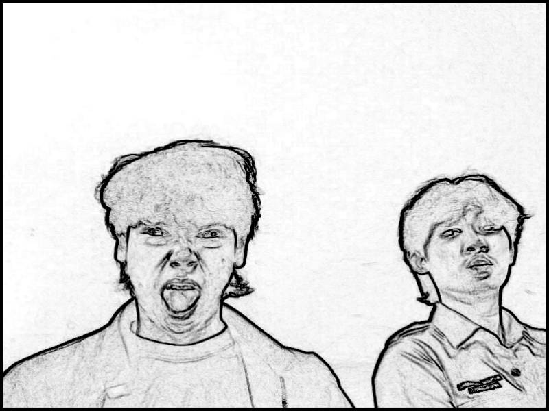

Biodata Diri

Data Pribadi
Nama: Muhammad Rafi Shidiq Arkan
TTL: Bandung, 31 Agustus 2007
Jenis kelamin: Pria
Umur: 19 Tahun
Agama: Islam
Pendidikan: Mahasiswa, ITENAS
Alamat
Dimana: Taman Bunga Cilame
Kecamatan: Ngamprah
Kabupaten: Kabupaten Bandung Barat
Provinsi: Jawa Barat